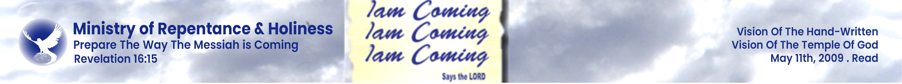
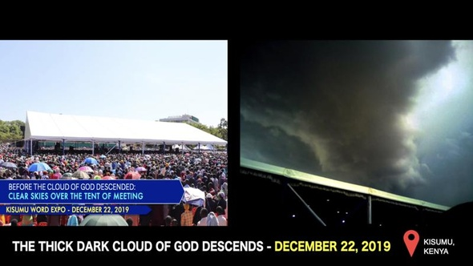
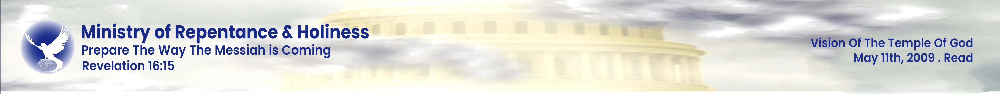
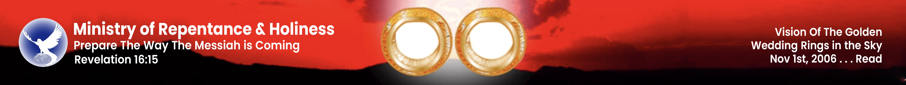

Prepare the Way.
The Messiah is Coming.
The hour of preparation is upon us. Repent and prepare the way for the Lord's return.
Prophecy Alerts
Monitoring global shifts in alignment with the Word of the Lord.
Global Economic Reset and the Third Seal
The fulfillment of the prophecy regarding the scale and the bread. Observe the currency fluctuations in the East.
The Heavens are Opening Over Latin America
Massive visitation scheduled for the upcoming months. The revival fire is being kindled in the Andes.
The Middle East Alignment: A Final Sign
Recent diplomatic movements signaling the acceleration of the end-time timeline as foretold in the Archive.
Ministry Highlights

The Dreadful Fulfilment of the Venezuela Earthquake
The most dreadful fulfilment of the historic Venezuela earthquake prophesied by the Prophet of the LORD, now come to pass before the eyes of the nations.
Watch Now arrow_forward
The Cloud of God Descends
A supernatural cloud manifestation witnessed in Kisumu, Kenya, confirming the Lord's presence and power in our midst.
View Details arrow_forwardMassive Healing Visitation to Ivory Coast
An extraordinary wave of healing and restoration sweeping through the Ivory Coast, with countless testimonies of miraculous deliverance.
View Prophecy arrow_forwardHIV/AIDS Healed
World-leading institutions testified to miraculous healing as HIV/AIDS was completely healed through prayer and divine intervention.
View Testimony arrow_forwardBlind Eyes Opened
When the LORD spat on the ground and opened blind eyes, confirming His power to restore sight through miraculous divine intervention.
View Testimony arrow_forwardProphecies Accurately Fulfilled
Divine prophecies given by the LORD have come to pass with precise accuracy, confirming His word and the authenticity of His messenger.
View Prophecies arrow_forwardThe LORD Walked Across the Sky
A miraculous manifestation where the LORD Himself was seen walking across the sky, a powerful sign of His divine presence and authority.
Read Vision arrow_forward
Vision of the Rapture of the Dead
A profound prophetic vision revealing the glorious rapture of the dead, confirming the LORD's promise of resurrection and eternal life.
Read Vision arrow_forwardEbola Prophecy Fulfilled
November 2009 prophecy of Ebola was fulfilled in 2014, demonstrating the accuracy of the prophetic word given by the LORD.
Read Prophecy arrow_forwardGolden Wedding Rings in the Sky
November 1, 2006 vision of two golden wedding rings appearing in the sky, symbolizing the divine union between the Bridegroom and His Church.
Read Vision arrow_forward
Daniel's 70th Week
The prophetic timeline of Daniel's 70th Week revealed, showing how current events align with ancient biblical prophecy about the end times.
Learn More arrow_forwardJesus is LORD Radio Nakuru
The voice of truth broadcasting from Nakuru, Kenya on 105.3FM & 105.9FM, reaching souls with the message of repentance and holiness. Visit the radio website to listen live.
Visit Radio Website arrow_forwardGlobal Revival Crusades
Mass crusades across nations witnessing supernatural signs, wonders, and healings, drawing multitudes to the message of repentance.
View Events arrow_forwardSupernatural Manifestations
Countless supernatural manifestations including rain in dry seasons, angelic visitations, and divine signs confirming the LORD's presence.
Learn More arrow_forwardTune In
Centralizing the truth. Access the global frequency of the Holy Spirit and the depths of the Word.
Currently Off Air
The live YouTube broadcast isn't streaming right now. Tune in on 105.3FM / 105.9FM, or catch past broadcasts below.
Past Broadcasts Checking live status…